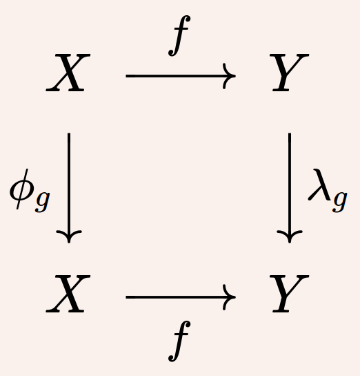

Background. Towards the end of robotic systems capable of ubiquitous, persistent deployment in the wild,
researchers across diverse subdisciplines of our field
have exploited the inherent symmetries present in robotic systems and their environment to achieve
drastic improvements in performance, efficiency, and robustness. For example:
- Equivariant architectures for data-driven perception have demonstrated impressive generalization and sample efficiency, all the while reducing model complexity and guaranteeing by design that extraneous transformations will not degrade their predictions.
- A symmetry-aware approach to the filter design has yielded improved convergence properties in state estimation, providing both formal certificates and astonishing empirical accuracy in field deployments.
- As the complexity of both individual agents and multiagent teams has grown, the exploitation of symmetry in control has tamed unwieldy high-dimensional models, sated the appetite of data-hungry methods like reinforcement learning, and aided in the decentralized coordination of large robot swarms.
- introduce new members of the broader robotics community to symmetry-informed methods,
- identify new opportunities to leverage these cross-cutting concepts and apply geometric expertise in new areas,
- align with the IROS 2024 theme "Robotics for Sustainable Development" by reducing the environmental impact of autonomous systems via reduced model complexity, more efficient algorithms, and greater reliability, and
- ultimately bring us closer to the availability of ubiquitous, intelligent robotic systems prepared to tackle society's greatest challenges and play an active role in our daily lives.
Keynote Speakers


Schedule (tentative)
| Opening Remarks | |
|
Keynote: Maani Ghaffari
"Computational Symmetry for Efficient Generalizable Algorithms in
Robotics"
|
|
|
Keynote: Amanda Prorok
"Leveraging Symmetry for Modeling Multi-Agent Interaction"
|
|
|
Keynote: Robert Mahony
"Galilean Space-Time in Robotics"
|
|
| Poster Session + Coffee | |
|
Keynote: Elise van der Pol
"Symmetry in Decision Making: State of the Art, Challenges, and
Future
Directions"
|
|
|
Keynote: Robin Walters
"Equivariant Neural Networks for Robotic Manipulation"
|
|
| Panel Discussion | |
| Award Session + Closing Remarks |
All times are UTC+4. Schedule will be finalized closer to the workshop.
Call for Papers
We invite contributions exploring the role of symmetry across diverse problems in robotics and autonomy, including (but not limited to):
- Geometric mechanics and symmetry in locomotion planning and control
- Conservation laws and motion planning for nonholonomic vehicles
- Formal certificates or experimental verification of equivariant filters
- Approximately equivariant architectures for working with broken symmetry
- Feedback linearization and differential flatness in the presence of symmetry
- Model order reduction via symmetry
- Equivariant neural representations
- Symmetry as a prior in physics-informed machine learning
- Discrete symmetries in biological and robotic systems
- Equivariant deep learning
- Symmetries in geometric perception (3D reconstruction, registration, 3D object detection)
- Symmetries with proprioceptive sensors (IMU integration etc.)
- Symmetry-informed optimizers
- Sample complexity and robustness benefits in equivariant machine learning
- Symmetries in multiagent systems (flocking, tracking, coordination)
- Graph neural networks for decentralized multiagent autonomy
Author Guidelines
- We welcome the contribution of short papers / extended abstracts of 2-4 pages in 2-column IEEE conference format (including all figures and appendices but excluding references), to give a chance to authors of already published or ongoing works to present their work at the workshop.
- The workshop is non-archival (i.e. contribution should not prohibit submission to other venues), and preliminary or late-breaking results are welcome. Already-published works should mention where the work has previously been published. Contributions will be reviewed (single blind) for basic quality and relevance to the workshop.
- Accepted abstracts will be available on the workshop website and presented in poster format during the workshop.
- Extended abstracts should be submitted via EasyChair: https://easychair.org/conferences/?conf=symrob2024
Important Dates
All deadlines are AoE (Anywhere on Earth).
- Paper Submission:
August 16, 2024September 16, 2024 - Acceptance Notification:
August 30, 2024September 23, 2024 - Workshop: October 14, 2024
Best Poster Award
To encourage contributions, we will present a Best Poster Award to one of the contributions (to be judged by invited speakers and perhaps other senior researchers), with a monetary prize supported by the IEEE RAS TC's on "Algorithms for Planning and Control of Robot Motion" and "Computer & Robot Vision".
Organizers
Acknowledgements
The organizers gratefully acknowledge the financial support provided for the workshop by the IEEE RAS TC's on
"Algorithms for Planning and Control of Robot Motion" and "Computer & Robot Vision".
We also appreciate the endorsement of the workshop by the IEEE RAS TC's on "Multi-Robot Systems" and "Robot Learning".